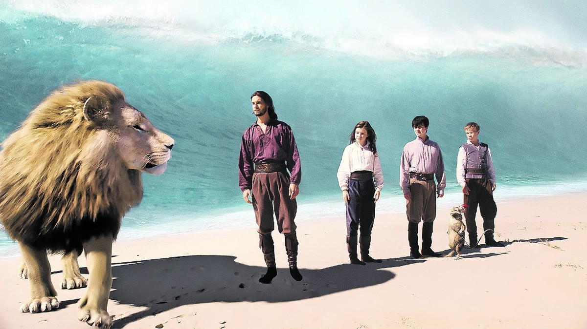

| Pelicula | NARNIA |
|---|---|
| Director | Andrew Adamson Michael Apted |
| Descripción |
Es un país de fantasía, un mundo mágico habitado por animales parlantes, criaturas míticas y magia,
, donde los niños del mundo real pueden entrar a través de un ropero. Liderado por el león Aslan, está repleto de animales mitológicos, hadas y duendes. Pero la malvada Bruja Blanca ha condenado Narnia a un invierno perpetuo. |
| Cronología |
Narnia: "El León, la Bruja y el Ropero" (2005) Narnia: 2El Príncipe Caspian" (2008) Narnia "La Travesía del Viajero del Alba" (2010) |
| Imagen |  |